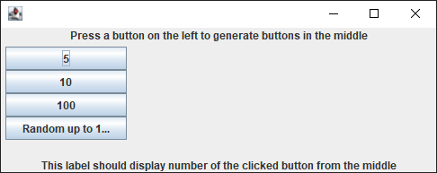
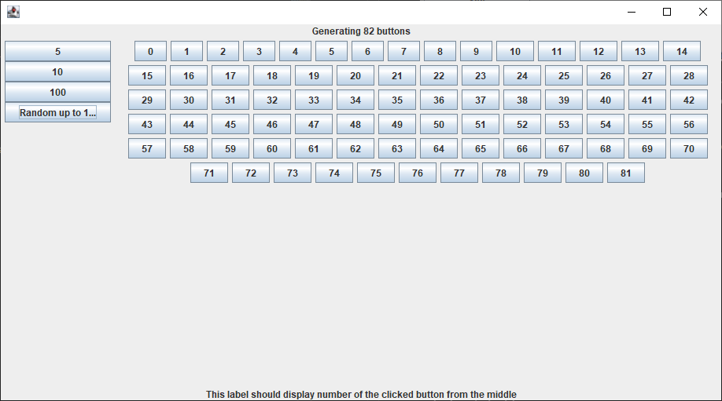
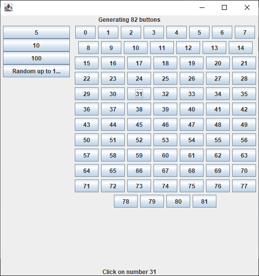
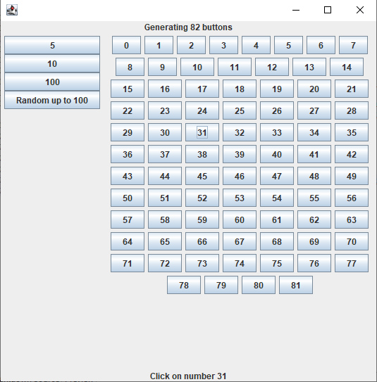

Potrebno je dovršiti kod u klasi DemoFrame koja predstavlja formu na kojoj se pri početnom pokretanju na lijevoj strani trebaju nalaziti 4 gumba, s nazivima 5, 10, 100 i Random up to 100.

Klikom na pojedini gumb, labela na vrhu treba promijeniti naziv u Generating X buttons, gdje je X 5, 10, 100, ili broj u intervalu [1, 100] ovisno o tome koji gumb je kliknut. Dodatno, osim promjene labele, u centralnom dijelu treba se generirati X novih gumba, s nazivima redom od 0 do (uključivo) X-1.

Klikom na neki od generiranih gumba u sredini, donja labela mijenja svoj tekst u Click on number Y, pri čemu je Y tekst kliknutog gumba.
 
Napomene:
Hoće li tekst gumba Random up to 100 biti prikazan u cijelosti ili ne, ovisi o rezoluciji ekrana, skaliranju fontova i slično, ali je evidentno da se mijenjanjem veličine prozora njihova širina i visina ne mijenjaju.
Sve komponente iz nekog panela (npr. referenciranog varijablom p) mogu se ukloniti pozivom postupka removeAll(), npr. p.removeAll().
Prilikom dinamičkog dodavanja kontrola u panel, može se dogoditi da vizualni prikaz ne bude ispravan dok se prozor ne raširi ili smanji, što uzrokuje ponovno iscrtavanje. Navedeno ne utječe na bodovanje, a moguće je i programski izvesti pozivanjem sljedećih dviju naredbi:
centerPane.revalidate();
centerPane.repaint();